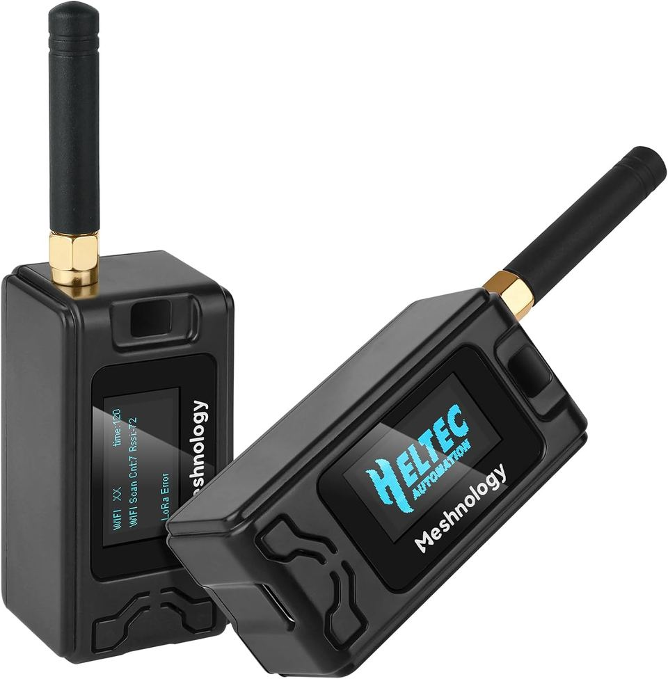
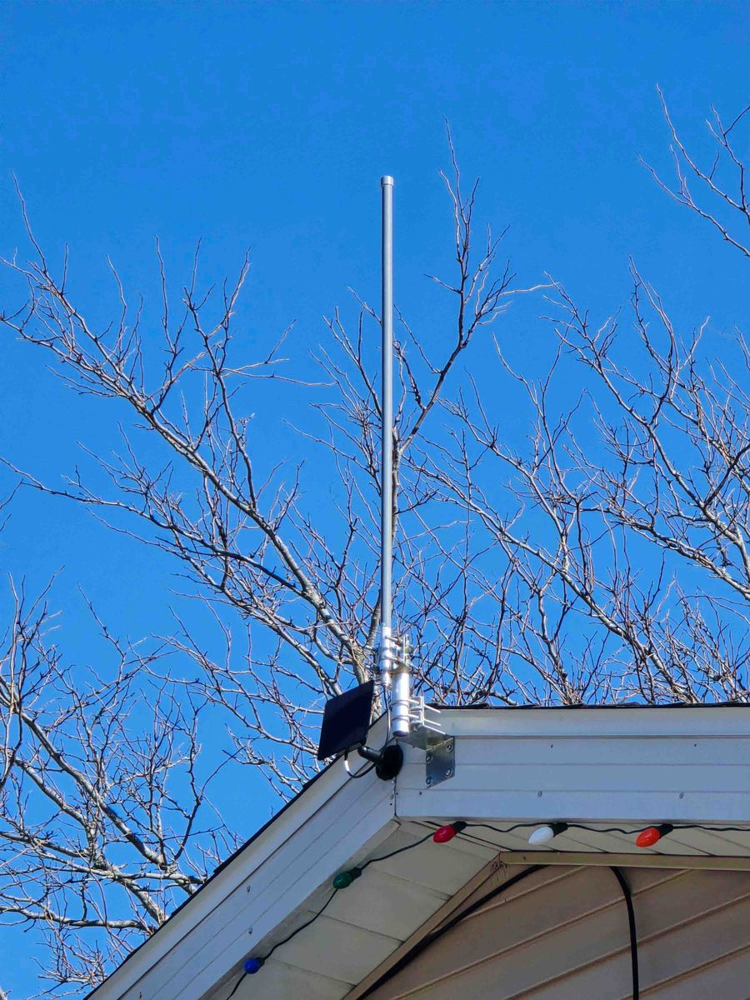
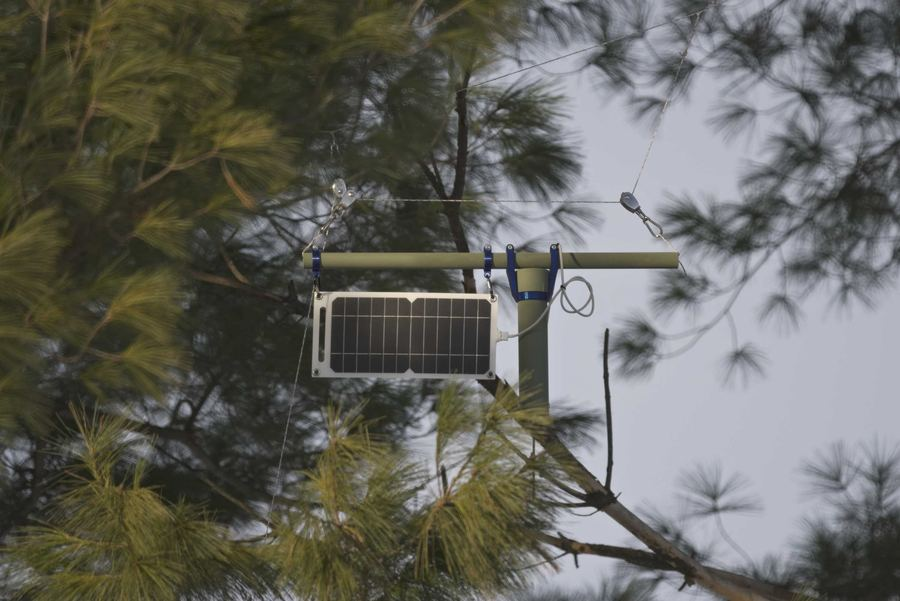
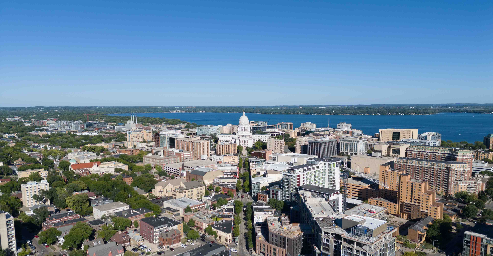

Community connection
Send short messages across town through a network built and cared for by local people.
WaunaMesh is a friendly, neighborhood-built radio network helping Waunakee connect with each other and with the larger Madison Mesh community.
What is WaunaMesh?
WaunaMesh uses small, low-power radios to pass short messages from one nearby radio to the next. Each radio is called a node. When more neighbors host nodes, the network gets stronger and reaches farther.
The goal is simple: make it easier for people in Waunakee to learn, experiment, help during outages, and stay connected without depending only on cell towers, Wi-Fi, or the internet.

Why it matters
WaunaMesh is practical, educational, and welcoming. It gives people a hands-on way to understand radio, mapping, local geography, emergency readiness, and community service.
Send short messages across town through a network built and cared for by local people.
Practice ways to communicate when storms, outages, or busy networks make normal tools less reliable.
Learn about radio, antennas, maps, batteries, solar power, software, and local problem solving.
A home, farm, church, school, shop, or barn can become a useful part of the local network.
Where it reaches
WaunaMesh is adding local coverage around the Village of Waunakee and connecting into Madison's larger off-grid mesh network. The anchor radio is located at Schumacher Farm Park, with a strong view across Waunakee and a clear path toward downtown Madison.
Use the map to explore active nodes and how the regional network is growing.
How it works
You do not need to be a radio expert to help. The basics are easy to understand, and the Madison Mesh community has guides, tools, and people who can walk you through it.
A small radio is installed at a useful location. Higher spots with a clear view are especially valuable.
Each node can pass short messages along to nearby nodes, extending the reach of the network.
Strong anchor nodes help connect Waunakee into the broader Madison-area mesh.
Neighbors can test, improve, map, teach, and share what they discover.
Friendly onboarding
You can join as a beginner, a host site, a parent with a curious kid, a hardware tinkerer, a mapper, an emergency preparedness volunteer, or simply a neighbor who wants to learn.
1. Say hello. Join the Madison Mesh Discord.
2. Learn what to buy. Most people start with an affordable LoRa radio that can run MeshCore. Most devices sold for Meshtastic are compatible after reflashing.
3. Try your first message. Once your device is ready, connect with the community and test the mesh.
4. Help coverage grow. Host a node, suggest a location, improve maps, or help at a public demo.



Field Day 2026
The Four Lakes Amateur Radio Club will host ARRL Field Day at Schumacher Farm Park in Waunakee. We hope to have WaunaMesh fully up and running in time for this public celebration of radio, learning, and emergency communication.
The radio network itself can pass local messages without internet or cell towers. Online maps and some tools do use the internet.
WaunaMesh connects with the amateur radio community, especially for learning and public events. The mesh devices use low-power LoRa radios, no license required.
Yes. Useful host spots include homes, barns, churches, schools, farms, shops, and other places with height, power, and a clear view.
Yes. While the public chat uses a shared key, direct messages and chat rooms are encrypted.